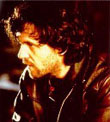

|

www.nomorewars.org The Guardian, April 23, 1999 |
|
Il duellante
Duella, fa a botte, aiuta le mucche a partorire. E tra una cosa e l'altra fa dei film. Il regista serbo Emir Kusturica parla con Fiachra Gibbons di politica, della sua arte - e della guerra. venerdì 23 aprile 1999 Quando non è occupato ad azzuffarsi per le strade di Belgrado con uomini al cui confronto Arkan sembra Mary Poppins, o a sfidare qualcuno a duello, o a suonare in qualche gruppo rock serbo, Emir Kusturica va a ritirare la Palma D'Oro a Cannes. Nessun altro regista ne ha mai vinte due, neanche Fellini. Kusturica lo idolatra, e forse addirittura si immagina come un Fellini. Ma il piccolo e tozzo italiano non avrebbe mai avuto le palle per poter essere come Emir Kusturica. Pochi potrebbero. Non è esagerato dire che molta gente vorrebbe vedere morto l'autore di Underground e Il tempo dei gitani. In effetti è fortunato se è ancora vivo. Nel 1993 sfidò a duello Vojislav Seselj, il leader dell'ultra nazionalista Partito Radicale, ora all'interno del governo di Milosevic. Gli disse di presentarsi nel primo pomeriggio nel cuore di Belgrado, con un'arma di sua scelta. Seselj rifiutò, dicendo che "non voleva essere accusato dell'omicidio di un artista". Due anni dopo stese a pugni Nebojsa Pajkic, leader dell'altrettanto agghiacciante New Serbian Right movement. La moglie di Pajkic picchiò Kusturica con la borsetta, un regalo del suo "caro amico" Radovan Karadzic, leader dei serbi di Bosnia, ora ricercato per crimini di guerra. Le ostilità non si limitano ai suoi avversari politici. Molte le ha avute con ex amici. "Kusturica è il più grande traditore della Bosnia", mi disse uno. Un altro mi disse che era un "criminale di guerra, un leccaculo cetnico, un pupazzo di Milosevic... Mi fa vomitare pensare a lui." Il filosofo francese Bernard-Henri Lévy ha fatto addirittura un film per attaccarlo. "Non troverai nessuno a Sarajevo che spenda una buona parola per lui," disse. Ne ho trovati. Molti, per la verità. E tutti parlavano del suo coraggio, della sua integrità e del suo carattere. "Non è il pupazzo di nessuno, e meno che mai di Milosevic," mi disse un ex collega della tv di Sarajevo. Quelli che lo affermano sono accecati dall'odio. È sempre andato per la sua strada. Ha un gran senso dell'umorismo. Sai, è così tagliente che fa paura, è per questo che si fa molti nemici." I sopravvissuti alle sue estenuanti riprese sono divisi in modo equo. "Emir si ammazza per i suoi film. E se lavori per lui ammazzerà anche te". Ha avuto almeno un crollo; più un esaurimento, durante la lavorazione del suo brillante ma confuso debutto americano, Arizona Dreams. Kusturica è un uomo perennemente sul punto di combustione. Ci siamo incontrati il giorno in cui la NATO bombardò il convoglio di profughi kosovari e diede la colpa ai serbi. Da qualche attimo mi stava rimbalzando nella testa il pensiero di non parlare della guerra, quando lui piombò dentro, un gran orso barbuto con un sigaro mezzo masticato che gli sporgeva dalla bocca, come un Castro dei Balcani. Potresti immaginartelo mentre maneggia un Kalashnikov con la stessa facilità di una telecamera, finchè non lo guardi negli occhi. Gli occhi castani più grandi e teneri che io abbia mai visto in un uomo. Se fossi stato una donna, sarei svenuta lunga distesa. Allora dimmi, come ci si sente ad appartenere alla nazione più odiata della terra - dopo l'Inghilterra, chiaramente. Un piatto si frantumò a terra dietro di noi. Lui non rise. Anzi, si mise la testa tra le mani. "Terribile, terribile, terribile! Sai, penso che questa potrebbe essere la fine del mondo. Dimmi, perché bombardare i ponti?" "Senti, il mio cuore non può sopportare la vista di questi profughi albanesi, le foto di padri, madri e bimbi in lacrime, ma il mio cuore si è spezzato anche guardando i profughi serbi che lasciavano la Croazia. Quasi mezzo milione di essi vennero buttati fuori da Knin e Krajina, con l'appoggio degli americani, in un week-end. E sai come Le Monde chiamò questa cosa? 'Pulizia etnica auto-motivata'. Qui c'è un livello umano che è stato ignorato. "È incredibile. La Nato non ha aiutato gli albanesi e ha solo rafforzato Milosevic. Questo Robin Fook. Chi è questo Robin Gook?...'Non ce ne facciamo niente delle vostre lacrime di coccodrillo serbe riguardo l'attacco al convoglio,' diceva al telegiornale stamattina. Il popolo inglese è un popolo nobile, che io ammiro molto, ma quest'uomo è un Muppet piccolo e peloso. Come potete farvi rappresentare da lui?" Gli dico che nonostante assomigli ad uno gnomo, Cook è considerato un Casanova. "Vuoi dire che le donne vogliono fare del sesso con lui? Come possono farlo entrare nel loro letto? Che razza di donne avete in Inghilterra? Piuttosto andrei con una capra." E fa una delle sue dolci gran risate. "Mi dispiace, non avevo intenzione di essere irrispettoso," e fa ondeggiare le mani come un pasha contrito. Kusturica è un ex rocker di Sarajevo ed ex satirico della TV, di sangue misto serbo e musulmano, che si aggrappa alla disperata speranza di una Yugoslavia multietnica. Kusturica è imbarazzato dalla sua reputazione, ma non se ne vergogna. "Sono molto impulsivo e molto stupido a volte, ma sono molto onesto." Non è solo passionale - c'è in lui una generosità di pensiero e di spirito. Mio figlio (una pop star, che ha suonato ai concerti di Belgrado fatti in sfida ai bombardamenti) ora è un gran serbo a causa della NATO, ma non c'è sangue di uno dei popoli della Yugoslavia che non scorra in lui. La cosa stupida è che la Serbia è l'unica ad essere multietnica. Gli altri sono per la maggior parte mini stati etnicamente ripuliti. Non un solo serbo sopravvive in Croazia. E ora i cowboys ci stanno ammazzando. Sai, circa il 40% non sono serbi - croati, ungheresi, musulmani, greci." Dico che ci sono molti meno albanesi ora. "Questo è Milosevic. La Serbia non è Milosevic, anche se la NATO lo sta facendo diventare un santo. L'occidente ne ha fatto un personaggio orwelliano e cerca di portare avanti con lui un gioco orwelliano. Ma Milosevic può giocare solo nella parte dello slavo, o del contadino. Lo stanno facendo diventare una specie di Tito, quel Tito che non si piega di fronte a Stalin nel 1948. E, naturalmente, abbiamo questo problema dentro di noi, che ci piace resistere. I serbi non sono un popolo di assassini. Hanno dato un grande contributo alla cultura occidentale; premi Nobel, cinque squadre di basket campioni del mondo, e che dire del fisico Nikola Tesla? Il suo lavoro sulla ionosfera ha dato la possibilità ai missili Cruise di cadere su Belgrado. "Sai, ho un amico, Milo Djukanovic (il presidente del Montenegro), su cui noi democratici riponiamo grandi speranze in opposizione a Milosevic, ma le bombe hanno ridotto il suo ruolo. Ma li conosci i cowboys, loro devono vincere. Stavo leggendo un articolo di un senatore democratico americano che diceva che la guerra era un gran errore, non doveva succedere, - ma dobbiamo vincerla! "Io vivo in Normandia, e l'altro giorno ho aiutato una mucca a partorire. Non riusciva a farlo da sola. Ho dovuto tirarlo fuori. Mi sono chiesto che mondo fosse questo, dove una mucca deve essere aiutata a fare la cosa più naturale che ci sia. Siamo forse noi come quella mucca che non sappiamo più badare a noi stessi? Noi siamo solo dei buoni ricettori della nuova religione di Hollywood e della CNN. Ho molta paura. E non so se posso stare qui a pagare tasse per bombe che vengono mollate su mio figlio." Siamo nell'angolo più buio di una stanza vuota nel retro del più antico ristorante ebraico di Parigi. I ritratti di rabbini con le loro barbe morti tanto tempo fa ci fissano dall'oscurità, e ci rimproverano. Mi chiedo per un attimo se non stia cercando di far calare la cappa dell'Olocausto sul suo popolo. Ma Kusturica ha ancora un popolo? "Tu non sai che cosa la guerra abbia fatto ad una famiglia mista come la mia. Ho cominciato a spostarmi verso la Serbia quando ho sentito che il mio paese, la Yugoslavia, mi stava per essere portato via. Sentivo la mia nazionalità in modo meno forte di coloro che mi stavano attorno e che si stavano legando a queste assurde nuove entità... E, naturalmente, non sapevo parlare bosniaco," dice, strascicando le parole. Il bosniaco, come il croato, è una creazione artificiale, "depurata" da tutto ciò che suonasse simile al vecchio serbo-croato. L'attacco di mortaio al mercato di Sarajevo è stato per lui il punto di svolta. Kusturica afferma che è stato auto-inflitto, per trascinare l'occidente in guerra. "Telefonai ad un mio amico che mi disse 'Non so cosa sia peggio, i serbi che ci bombardano dai monti, o i musulmani che ci difendono.' Era come se ci strappassimo via le braccia, oltre al cervello." Ed è per questo che il suo "tradimento" è percepito in modo così amaro nella sua città natale, e per questo ci sarà sempre qualcuno che lo ritiene un lacchè di Belgrado. "Non sto cercando di dire che sono un genio, ma Underground è stato il più forte attacco che ci sia stato contro Milosevic. Parla di un uomo che chiude i suoi amici in una cella per 40 anni e li convince che la guerra sta ancora continuando. Lui li usa, ma loro continuano a credere che sia un grande. E questo è stato visto in ogni cinema della Serbia." Ora il suo maggior attaccamento lo prova per gli zingari. "Sono il popolo orientale più disprezzato e libero che ci sia. Sono odiati in egual misura da tutti, ma non si sono ancora compromessi. Chiamano i loro figli con nomi comunisti o John F Kennedy. Sono medievali ma hanno il cellulare. Io li amo, hanno conquistato il mio cuore." Gli zingari sono i protagonisti di vari suoi film, incluso l'ultimo, una frastornante commedia dal titolo Gatto nero, Gatto Bianco. E di nuovo è stato attaccato per aver fatto una commedia mentre Milosevic era ancora al potere. Io l'ho amata. E anche il critico del Guardian Jonathan Romney. "Ogni volta che rallenta un attimo qualcuno butta dentro una capra e un bel po' di oche," disse Romney. O qualcuno cerca inutilmente di appendersi a qualcosa - un tormentone della sua opera. Perché? "Avevo un insegnante a Praga che mi spiegò come distinguere i buoni film dai quelli pessimi, basandosi sul fatto che in quelli buoni ogni personaggio sembra stare in assenza di gravità. Ho pensato, perché non fare veramente levitare le persone, come Chagall?" disse indicando i rabbini. "È forse per questo che faccio del casino girando i film, perché per me ogni ripresa deve essere originale. E questo mi uccide." In carne e ossa, egli è come uno dei suoi eroi selvaggi - in parte divinità, in parte contadino, in parte filosofo. Metti lo psicopatico e diventerebbe un perfetto slavo a tutto tondo, come direbbe lui. Ed è l'animo slavo ciò che veramente gli fa paura. Quello russo in particolare. "Mi cago addosso pensando a come potrebbe finire. Come diceva Bismark, gli italiani tradiscono sempre e i russi arrivano sempre tardi. La Russia ora è per me come un accattone. In una mano ha le armi nucleari, nell'altra il piattino dell'elemosina. Se salta tutto per aria, sarà per una cosa irrazionale." Quando tiro fuori il suo litigio più recente, quello con il regista serbo Goran Paskaljevic, il suo sguardo esplode in mille fulmini, e sembra una fusione di tutti i grandi spiriti maligni slavi, da Rasputin a Ivan il Terribile. Ed è solo allora che noto la cicatrice che si contrae sotto l'occhio destro. Paskalgevic afferma che Kusturica cercò di fare in modo che il suo film Powderkeg, una giornata nella vita di Belgrado, non fosse mostrato alla Mostra del Cinema di Venezia. Kusturica ammette di aver giocato un po' duro, ma dice che è successo "solo dopo che ha iniziato ad attaccarmi ad ogni piè sospinto, accusandomi di essere il megafono di Milosevic solo per attirare l'attenzione su se stesso. Non ho cercato di fermare il suo film. Ho solo detto al nostro comune produttore che in futuro avrebbe dovuto scegliere fra me e quel babbeo." "Sai, il mondo è pieno di teste di cazzo. Paskaljevic è una di queste. Qui in Francia abbiamo Bernard-Henri Lévy. È un avvoltoio. Ora è al sicuro da qualche parte vicino al Kosovo nel suo ruolo di 'testimone'. Penso che gli sarebbe piaciuto da morire essere stato testimone dell'incontro tra Clinton e la Lewinsky nello Studio Ovale." La ragazza della Renault vuole che concluda. Sta facendo una pubblicità. "Devo vivere. I miei film non fanno molti soldi, e da quando c'è la guerra devo sostenere molte persone." Non vuole andare. Due pensieri gli hanno dato fastidio. "Sai, con i miliardi che hanno speso finora in questa guerra avrebbero potuto prendere tutti gli albanesi e i serbi del Kosovo e averli portati alle Bahamas, dove avrebbero ascoltato del reggae, cantato, bevuto, scopato e sarebbero stati felici. Si sarebbe potuto ricostruire la nostra industria ed economia e tutti si sarebbero scambiati baci a vicenda." Quindi si mette di nuovo la testa tra le mani. "Il Kosovo è il luogo della Battaglia del Campo dei Merli. I serbi sacrificarono se stessi per salvare l'Europa dai turchi. Non servì a niente, si persero molte vite da entrambe le parti. Ho paura che succeda di nuovo." Si alza e fa un sospiro: "Non darò mai più un'altra intervista. E penso che con la guerra non farò nessun film." Gli dico che ha già fatto questa minaccia, ma poi è tornato sui suoi passi. Gli dico che non vedo l'ora di vedere il suo prossimo film - che in realtà deve ancora iniziare a girare - DM Thomas's sprawling White Hotel, da un testo di Dennis Potter. "Lo dico sul serio stavolta," risponde, e sembra realmente ferito. "E la prossima volta che andate in guerra per favore ricordatevi," dice allungandomi quella vanga che ha al posto della mano, " di mettere qualcuno più bello come ministro degli esteri." E si copre la bocca con la spalla sghignazzando apertamente. "E la prossima volta che vuoi qualcuno che scriva qualcosa contro di me sul Guardian, fallo fare a me. Io sono il mio miglior nemico." |
The Duellist
He duels, he brawls, he helps cows to give birth. And in between he makes films. Serbian director Emir Kusturica talks to Fiachra Gibbons about politics, his art - and the war. Friday April 23, 1999 When He's not brawling on the streets of Belgrade with men who make Arkan look like Mary Poppins, challenging people to duels, or playing in Serbian rock bands, Emir Kusturica is winning the Palme D'Or at Cannes. No other director has ever won it twice, not even Fellini. Kusturica idolises, maybe even fancies himself as a Fellini. But the pudgy little Italian would never have had the balls to be Emir Kusturica. Few would. It is no exaggeration to say that a lot of people would like to see the maker of Underground and The Time Of The Gypsies dead. He is, in fact, lucky to be alive. In 1993 he challenged Vojislav Seselj, the leader of the ultra-nationalist Radical party, now part of Milosevic's government, to a duel. He said it should be in the heart of Belgrade, at high noon, with the weapon of his choosing. Seselj refused, saying he "he didn't want to be accused of the murder of an artist". Two years later he punched Nebojsa Pajkic, leader of the equally bloodcurdling New Serbian Right movement, to the ground. Pajkic's wife battered Kusturica with her handbag, a gift from her "dear friend" Radovan Karadzic, the leader of the Bosnian Serbs who is now wanted for war crimes. The feuds do not end with his political opponents. Many have been with former friends. "Kusturica is the greatest traitor to Bosnia," one told me. Another said he was a "war criminal, a Chetnik arselicker, a puppet of Milosevic... It makes me puke to think of him." The French philosopher Bernard-Henri Lévy even made a film to attack him. "You will not find anyone in Sarajevo with a good word for him," he said. I did. Several actually. All spoke of his courage, his integrity and his temper. "He is no onÈs puppet, least of all Milosevic's," said a former colleague from Sarajevo TV. "People who say that are blind with hatred. He has always gone his own way. He has a powerful sense of humour. You know, it is so sharp it frightens, that's why he makes enemies." The survivors of his exhausting shoots are equally divided. "Emir kills himself for his films. And if you work for him he will kill you too." He has had at least one breakdown; more a burn-out actually, during the making of his brilliant but shambolic American debut, Arizona Dreams. Kusturica is a man perpetually on the point of combustion. We met the day Nato bombed the convoys of Kosovan refugees and blamed it on the Serbs. I toyed for a moment with the idea of not mentioning the war when he barrelled in, a great bearded bear with a half-chewed cigar sticking out of his mouth like a Balkan Castro. You can see him carrying a Kalashnikov as easily as a camera until you look into his eyes. They are the largest, softest, brown eyes I've ever seen on a man. There is something sad and very vulnerable in them. If I were a woman, I'd have gone weak at the knees. So tell me, how does it feel to belong to the most hated nation on earth - after the English, of course. A plate smashed on to the floor behind us. He didn't laugh. Instead his head dropped into his hands. "Terrible, terrible, terrible! I think this might be the end of the world, you know. Tell me, why bomb bridges? "Listen, my heart cannot resist these Albanian refugees, the pictures of fathers, mothers and crying kids, but I also had my heart broken watching Serbian refugees leaving Croatia. Nearly half a million of them were kicked out of Knin and Krajina, with American backing, in one weekend. And do you know what Le Monde called it? 'Self-motivated ethnic cleansing'. There is a human level here that is being ignored. "It is incredible. Nato didn't help the Albanians and they have only strengthened Milosevic. This Robin Fook. Who is this Robin Gook?... 'We don't want your Serb crocodile tears about the attack on the convoys,' he was saying on the news today. The English nation are a gentle nation, whom I greatly admire, but this man is a small, hairy Muppet. How can you let him represent you?" I tell him that despite his gnomic looks, Cook is considered a Casanova. "You mean women want to have sex with him? How could they take him into their beds? What kind of women have you in England? I would rather go with a goat." And he laughs his great soft laugh. "I'm sorry, I do not mean to be disrespectful," and he waves his hand like an apologetic pasha. Kusturica is a former Sarajevan rocker and TV satirist, of mixed Serb and Muslim blood, who clings to forlorn hope of a multi-ethnic Yugoslavia. Kusturica is embarrassed by his reputation, but unapologetic. "I am very impulsive and very stupid sometimes, but I am very clean." He's not just passionate - there is a generosity of thought and spirit about him. "My son [a pop star, who played at the concerts in Belgrade to defy the bombing] is now a big Serb because of Nato, but there is not the blood of one nation of Yugoslavia that does not flow through him. The stupid thing is that Serbia is the only one which is multi-ethnic. Most of the rest are ethnically-cleansed mini-states. Not a single Serb survives in Croatia. And now the cowboys are killing us. Nearly 40%, you know, are not Serbs - Croats, Hungarians, Muslims, Greeks." I say there are a lot less Albanians now. "That is Milosevic. Serbia is not Milosevic, although Nato are now turning him into a saint. The west have made him into this Orwellian character and they try to play Orwellian games with him. But Milosevic can only play at being a Slav, or a peasant. They are turning him into Tito who stood up to Stalin in 1948. And, of course, we have this problem in us that we like resisting. The Serbs are not a nation of murderers. They have contributed so much to western culture; Nobel prizes, five world champion basketball teams, and what about the physicist Nikola Tesla? His work on the ionosphere made it possible for Cruise missiles now to drop on Belgrade. "You know, I have a friend, Milo Djukanovic [the president of Montenegro], who we democrats have great hopes of against Milosevic, but the bombs have minimised him. But you know the cowboys, they must win. I was reading an article by an American Democratic senator who said the war was a big mistake, it should never have happened - but we must win! "I live in Normandy, and the next day I was helping a cow give birth. She couldn't do it herself. I had to pull it out. I wondered what kind of world is it that a cow has to be helped to do the most natural thing. Are we like that cow that we cannot think for ourselves any more? All we are are good receptors to the new religion of Hollywood and CNN. I am very scared. And I don't know if I can stay here and pay taxes for bombs to be dropped on my son." We are in the darkened corner of an empty room at the back of Paris's oldest Jewish restaurant. Portraits of long-dead rabbis and their beards stare out of the gloom, reproaching us. I wonder for a while if he is trying to draw down the mantle of the Holocaust on his own people. But does Kusturica have a people any more? "You don't know what the war did to a mixed family like mine. I started moving towards Serbia when I felt my country, Yugoslavia, was being taken away from me. My feeling of nationality was not as strong as those around me who were attaching themselves to these absurd new entities... And, of course, I could not speak Bosnian," he drawls. Bosnian, like Croat, is an artificial creation, presently being "purified" of anything that smacks of the old Serbo-Croat. The mortar attack on the marketplace in Sarajevo was the turning point for him. Kusturica claims it was self-inflicted to bring the west into the war. "I rang one of my friends and he said, 'I don't know who is worse, the Serbs shelling us from the mountains, or the Muslims defending us.' It was like we were tearing out our limbs as well as our brains." Which is why his "betrayal" is so bitterly felt in his home town and why he will always be seen by some as a lackey of Belgrade. "I am not trying to say I'm a genius, but Underground was the strongest attack there has been on Milosevic. It is about a man who locks his friends in a cellar for 40 years and convinces them that the war is still going on. He uses them, but they still think he is a great guy. And this was shown in every cinema in Serbia." It is to the gypsies he now feels his greatest attachment. "They are the most despised and the free-est people of all. They are hated equally by everybody, yet they have no prejudices themselves. They call their kids after communists and after John F Kennedy. They are medieval but they have mobile phones. I love them, they hold my heart." Gypsies feature in several of his films, including the latest, a rip-roaring comedy called Black Cat, White Cat. Again, he has been attacked for making a comedy while Milosevic was still in power. I loved it. So did Guardian critic Jonathan Romney. "Every time it slacks for a second someone throws in a goat and several geese," Romney said. Or someone tries unsuccessfully to hang themselves - a motif of his work. Why? "I had a teacher in Prague who told me you tell a good movie from a bad one by the fact that in good ones every character looks like they are running out of gravity. I thought, why don't I really make people levitate, like Chagall?" he says, pointing to the nodding rabbis. "That is why maybe I'm a troublemaker making movies, because each shot has to be for me an original. It murders me." In the flesh, he is like one of his wild heroes, only more so - part god, part peasant, part philosopher. Throw in the psychopath and hÈd be the perfect well-rounded Slav, as he might say. And it is the Slav mind that really worries him. The Russian one in particular. "I am shit scared where this will all end. As Bismarck says, Italy always betrays and Russia always comes late. Russia to me is now like a beggar. In one hand it has nuclear weapons, in the other a begging bowl. If it all blows, it will be from an irrational thing." When I bring up his most recent feud, with the Serb director Goran Paskaljevic, thunder breaks over his face and he looks like all of the great Slav bogeymen rolled into one, from Rasputin to Ivan the Terrible. It is only then that I notice the scar twitch under his right eye. Paskalgevic claims Kusturica tried to stop his film Powderkeg, about a day in the life of Belgrade, from being shown at the Venice Film Festival. Kusturica admits to a bit of gamesmanship but says this was "only after he started attacking me at every turn, accusing me of being a mouthpiece of Milosevic just to get attention for himself. I did not try to stop his film. I simply told the producer we shared that he would have to choose between me and that jerk in future. "You know, the world is full of assholes. Paskaljevic is one. Here in France we have Bernard-Henri Lévy. He is a vulture. He is now somewhere safe near Kosovo being a 'witness'. I think he was dying to be a witness at Clinton's meeting with Lewinsky in the Oval Office." The girl from Renault wants him to wind up. He's making an advert. "I have to live. My films don't make a lot of money and since the war I have a lot of people to support." He doesn't want to go. Two thoughts have been bothering him. "You know, with the billions they have spent on the war so far they could have taken every Albanian and Serb in Kosovo to the Bahamas, and they could have listened to some reggae, sang, drank, fucked and be happy. Our industry and economy could have been rebuilt and everyone would have kissed each other." Then his head drops into his hands again. "Kosovo is where the Battle Of the Field Of The Blackbirds happened. The Serbs sacrificed themselves to save Europe from the Turks. It was inconclusive, and many lives were lost on both sides. I fear this will happen again." He gets up and gives out a sigh: "I am never going to make another interview. And I feel with the war I should not make another film." I tell him he has threatened that before but still came back for more. I tell him I can't wait to see his new film - which he has yet to start - DM Thomas's sprawling White Hotel, from Dennis Potter's script. "But I'm serious this time," he says, looking genuinely hurt. "Remember the next time you go to war," he says finally, stretching out his shovel of a hand to me, "please get a better looking foreign minister." And he sticks his stooge back in his mouth and smiles the cheesiest grin. "And the next time you want someone to write against me in the Guardian, let me do it. I am my best enemy." |
|
TOP • HOME | |